Housing · Fintech · B2C
POC
Pay on credit
It lets users use their credit card to settle payments like rent, education fees etc while earning cashback on every transaction.
- Drop-offs
- 29% fewer at key step
- Completion
- 8% lift overall
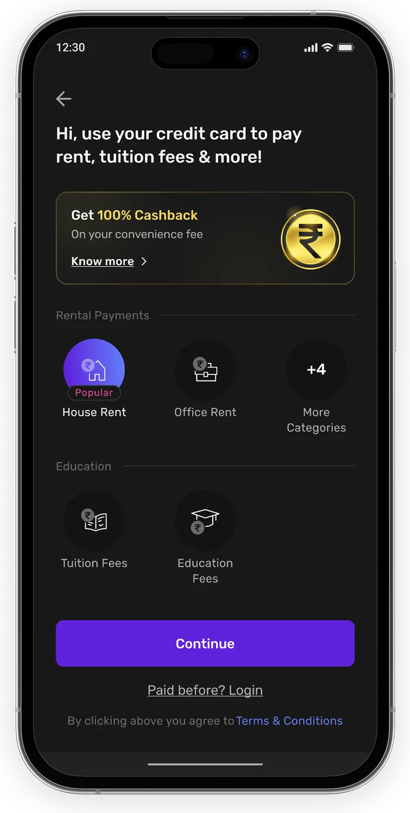
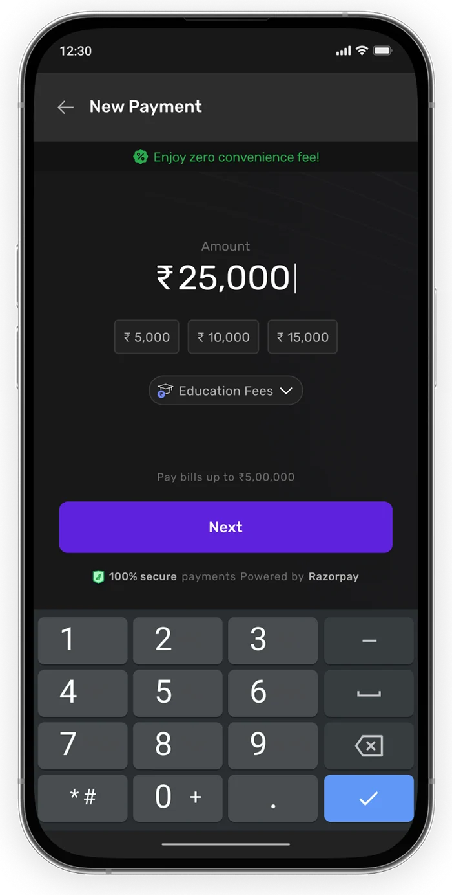
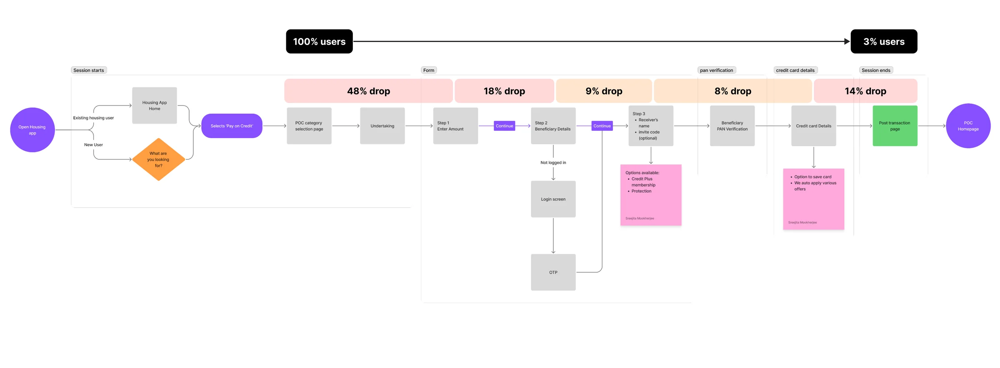
The Problem
The funnel has a 97% failure rate. Nearly half the users (48%) bounce at the start, and attrition remains high throughout the complex form. Our goal was to fix the middle-funnel collapse where users drop out during the payment process.
If 48% drop off at the start, is the landing page the main problem?
- 48% drop-off from landing to step 1 suggests that users are currently unable to understand the product value.
- Users landing from Housing.com have a different intent; many are likely just trying to explore the POC feature.
- High drop-off rates indicate that a significant portion of incoming traffic lacks an actual intent to use the product.
No doubt the landing page could use a revamp, but we can start with minor tweaks to target those who have the intent but don’t see value.
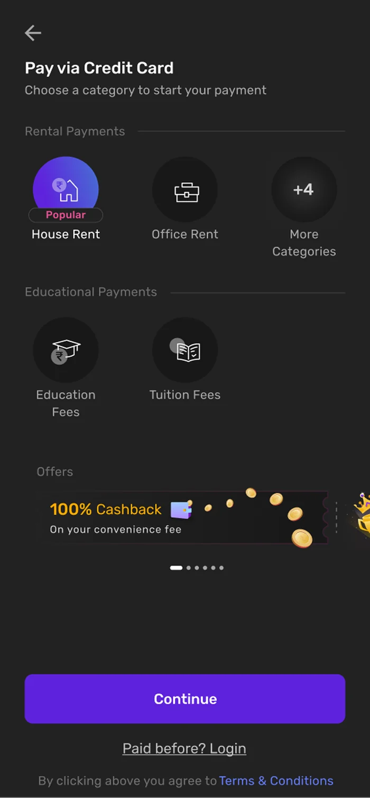
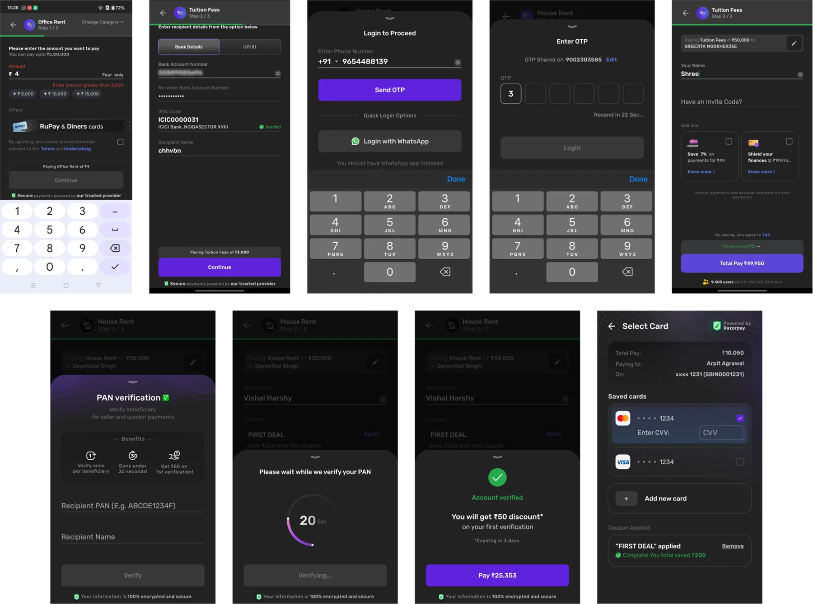
Is the total length of the funnel causing drop-offs?
- User feedback indicates that requiring Amount, Recipient, Sender, PAN, and Card details in sequence creates an exhausting journey.
- Since 51% prefer UPI, defaulting to the bank flow causes unnecessary cognitive load due to multiple manual fields.
- Keeping Recipient and Sender as separate steps increases the perceived effort of moving through the payment screens.
We can improve retention by simplifying the steps.
Is the savings experience impactful enough?
- Savings shown above the button and via coupons are not celebratory enough to be noticed during the transaction.
- Users do not feel sufficiently rewarded for their savings because the information is getting lost in the technical details.
- The current display fails to build enough positive reinforcement to encourage the user to complete the final payment.
Making the savings feel more rewarding is essential to driving higher completion rates in the final stage.
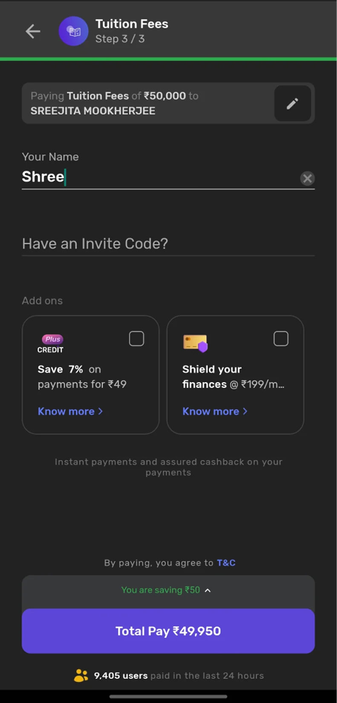
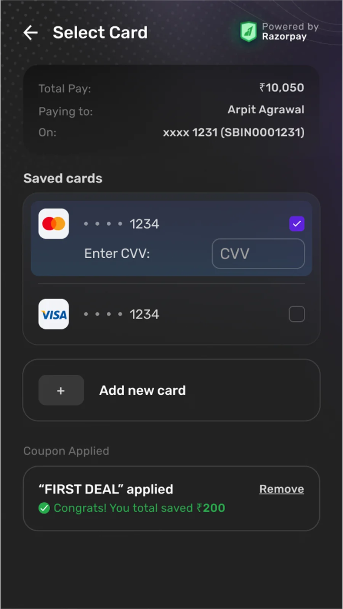
Focusing our energy where the friction was loudest
Faced with limited bandwidth, we pivoted from a full redesign to a high-impact “Form-First” strategy. We prioritized the core transaction steps and minor landing tweaks, while weaving savings visibility throughout the entire journey to keep users hooked from start to finish.
Starting with a more intentional first impression
To support our form-first strategy, we made surgical updates to the landing page. The goal was to build trust and highlight value before the user faced the complexity of the payment form.
- Visible Motivation (Point 1): Moving the 100% Cashback offer to the top anchors the value proposition immediately, ensuring users recognize the reward before they start the task.
- Guided Messaging (Point 2): Replaced the generic header with conversational copy to help users identify their path faster.
- Subtle Cleanup: Darkened the background to reduce visual noise and make the key actions pop.
This alone resulted in a 11% reduction in page drop-off
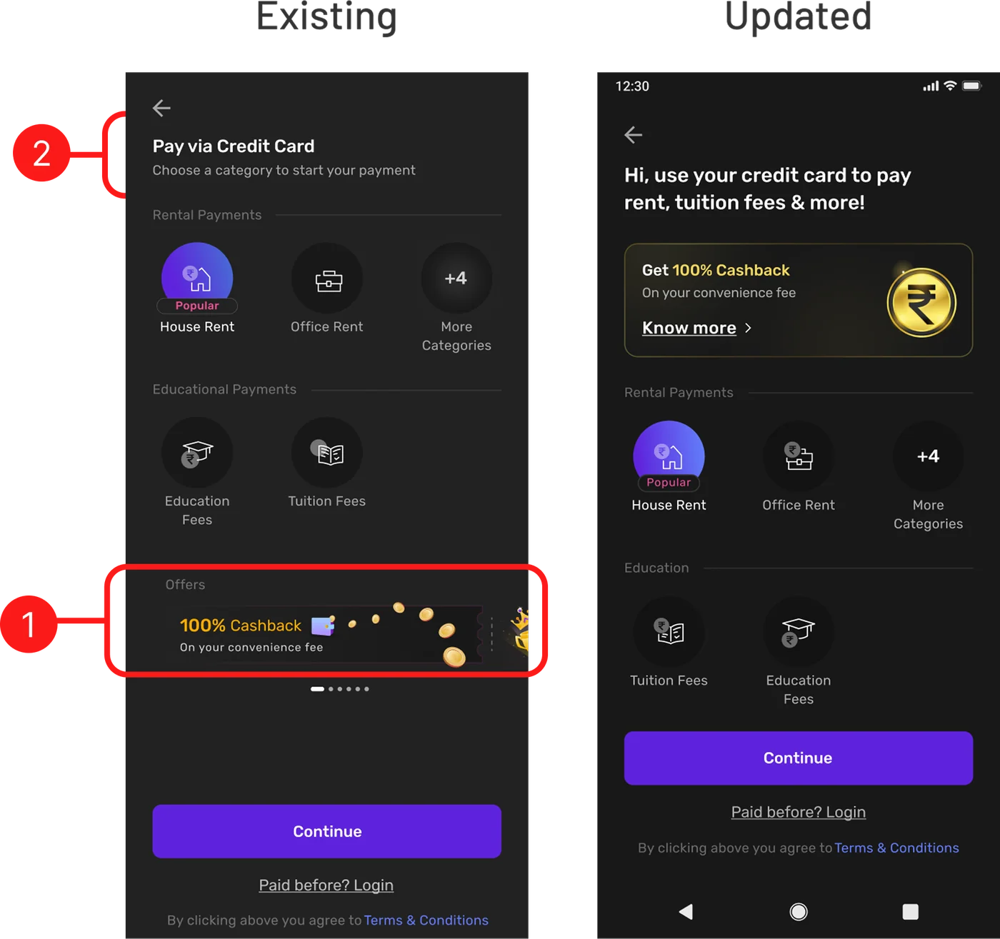
Making the complex feel effortless
By transitioning to a progressive disclosure model, we transformed a daunting multi-step form into a smooth, singular experience that guides the user to the finish line.
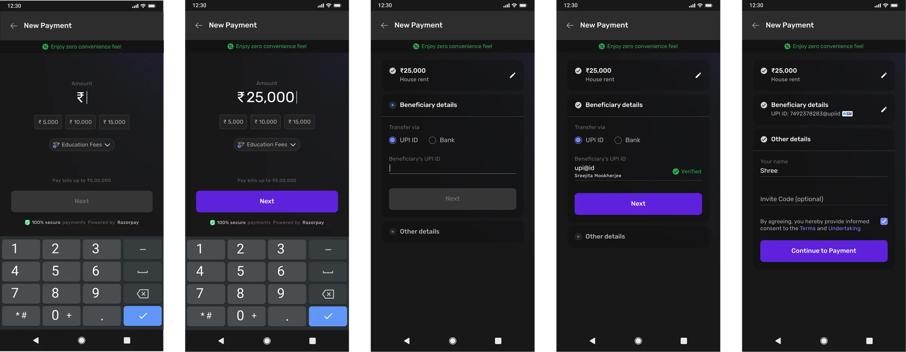
Optimizing these steps led to a 17% reduction in form drop-off.
Before
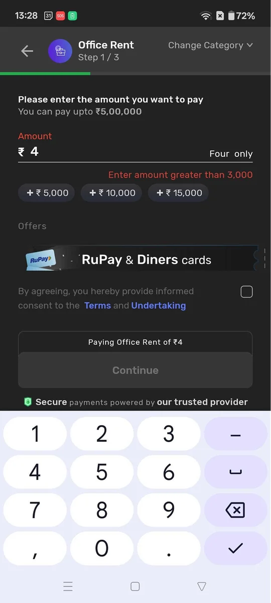
- “Change Category” is buried in the header, making it difficult for users to correct mistakes.
- Smothering the primary input with offers, T&Cs, and banners creates visual noise that stalls the user.
- Offers outside of viewport
After
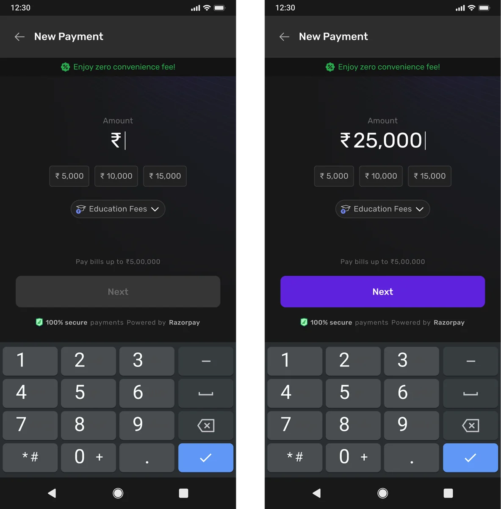
Before
- With 51% of users preferring UPI, defaulting to Bank Details forced the majority to take the pain of manually switching tabs
- Bank transfers require 4 manual fields, whereas UPI needs only 1. Defaulting to the more complex flow created immediate cognitive friction.
- Amount very small and hidden. Clicking it will show breakup with all the extra charges
After
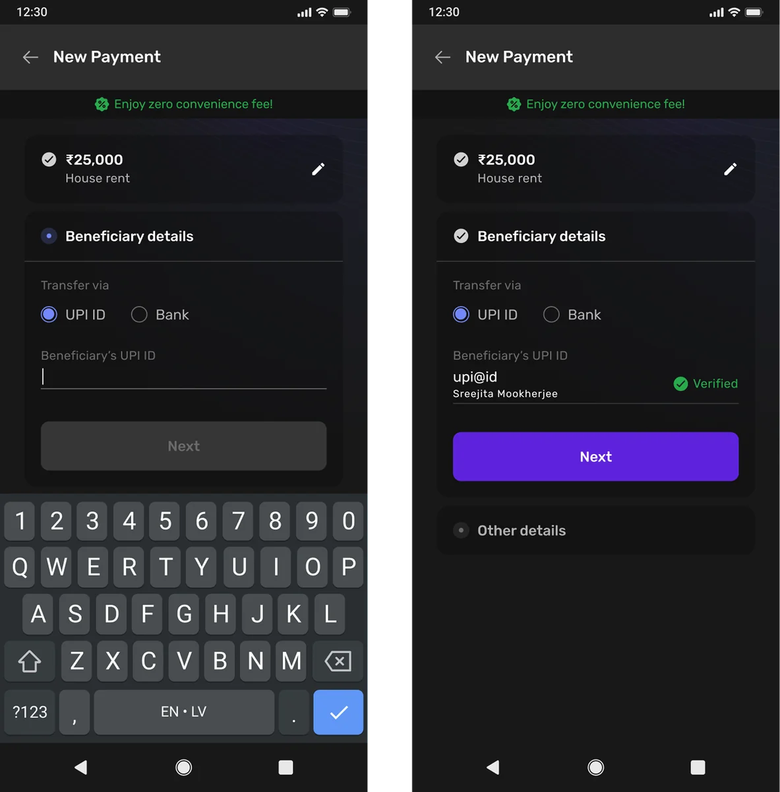
Before
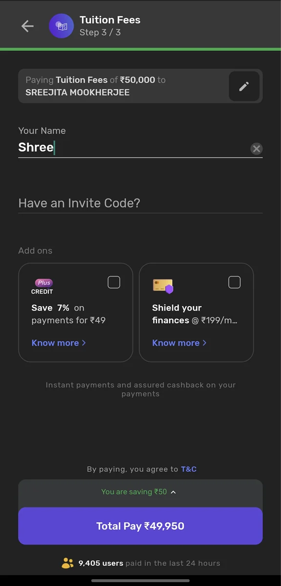
- A completely new step for only 1 field?
- There’s 0.2% CTR on add ons. Not relevant for user at this stage
- Finally I can see the money I am saving but only after I verified my PAN in the previous step
After
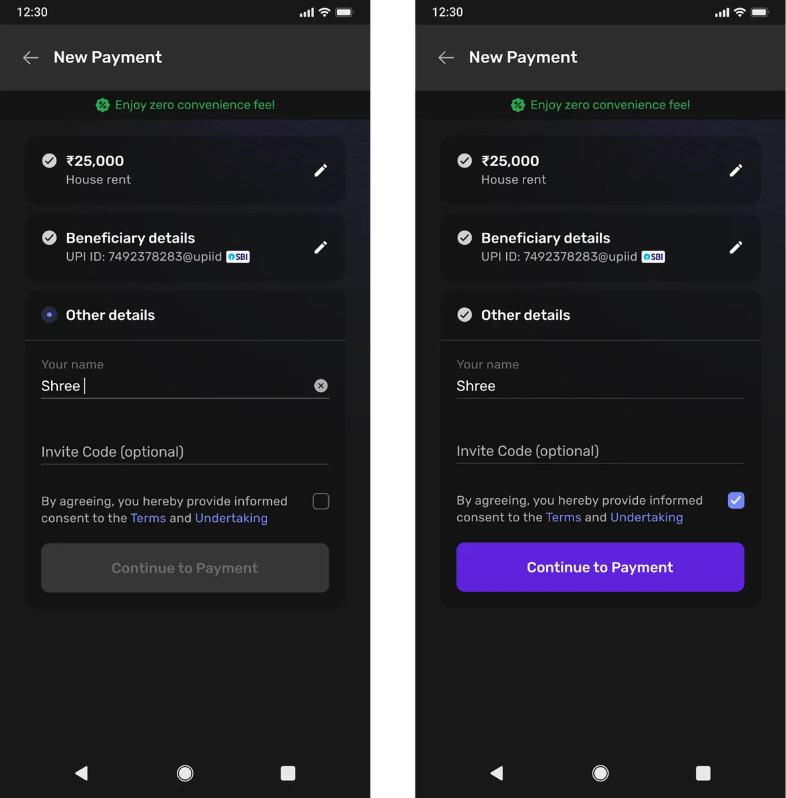
Maintaining a rewarding sense of progress
Instead of static feedback, we introduced dynamic, rolling savings and celebratory animations that update in real-time, ensuring the user feels a constant, visible sense of “winning” at every stage of the funnel.
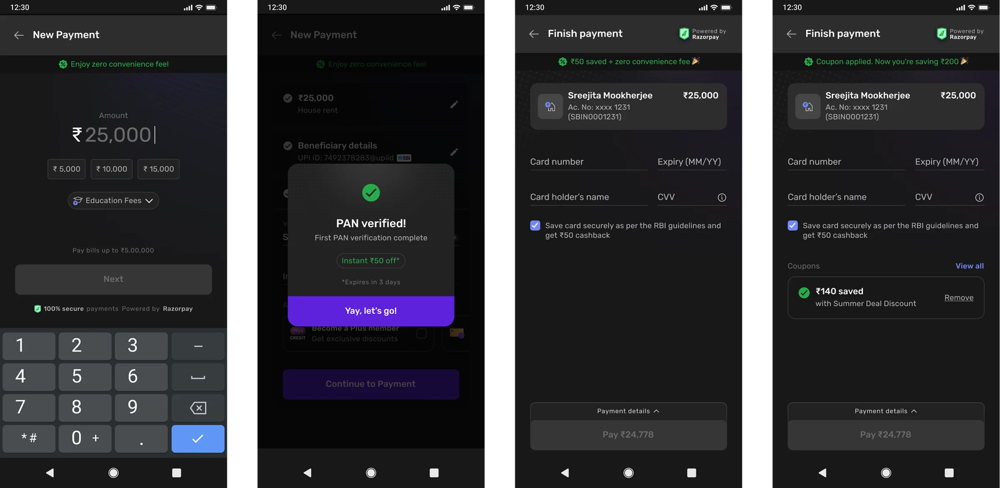
This consistent positive reinforcement was key to achieving the 8% overall improvement in flow completion.
That’s A wrap
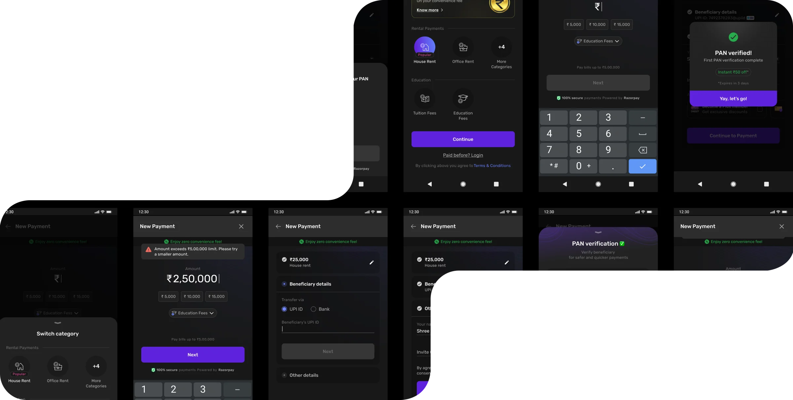
By shifting to a dynamic, reward-first journey, we achieved a 29% reduction in drop-offs at key step and a 8% lift in overall completion. We transformed a high-friction process into a seamless, celebratory flow that users actually trust and enjoy.
Keep exploring